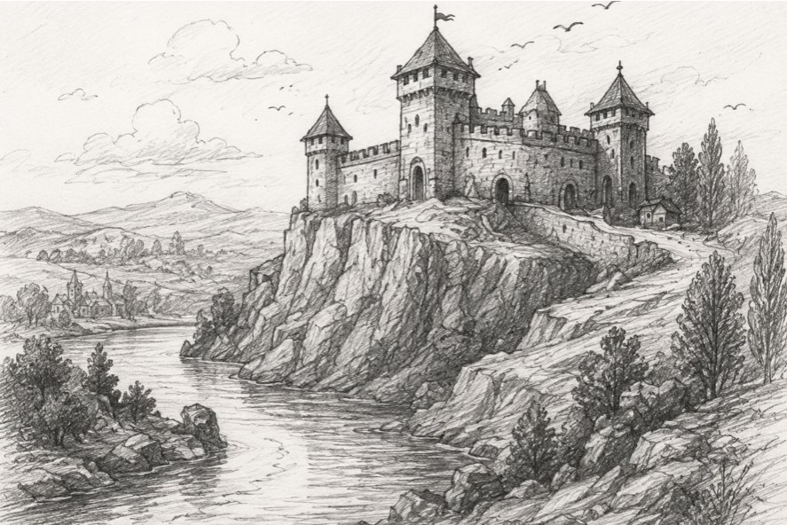
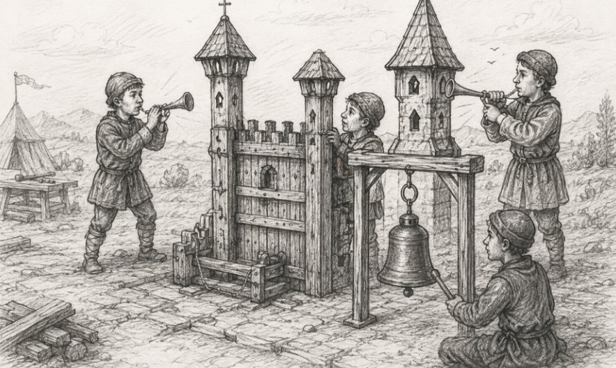
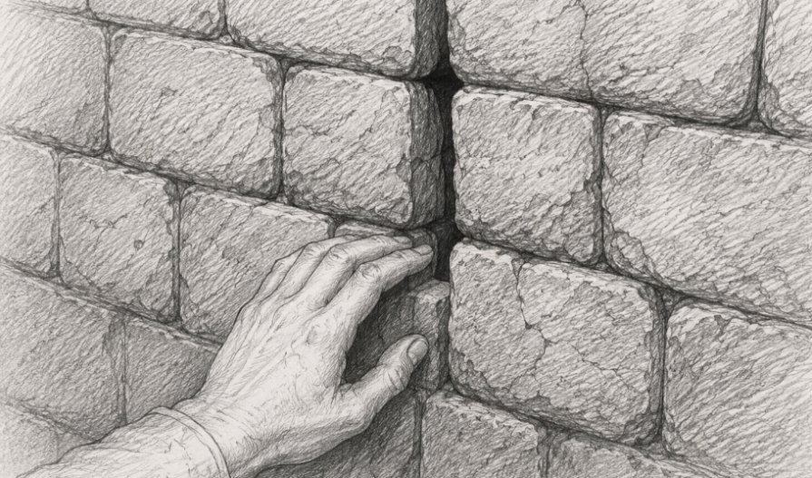
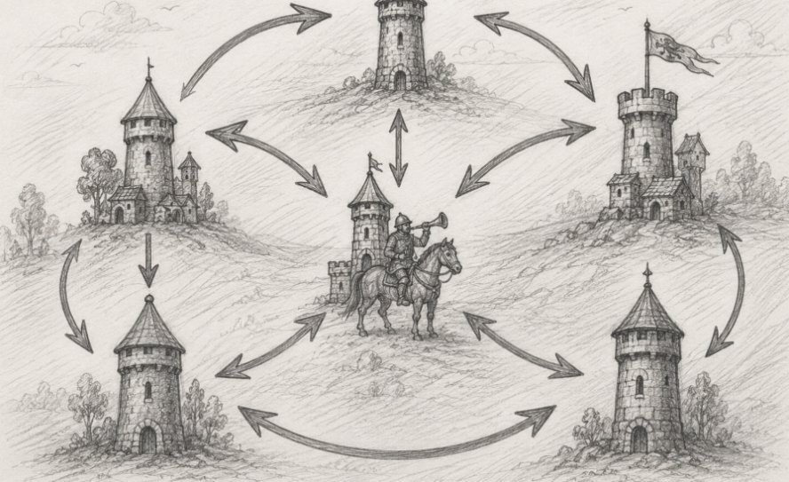
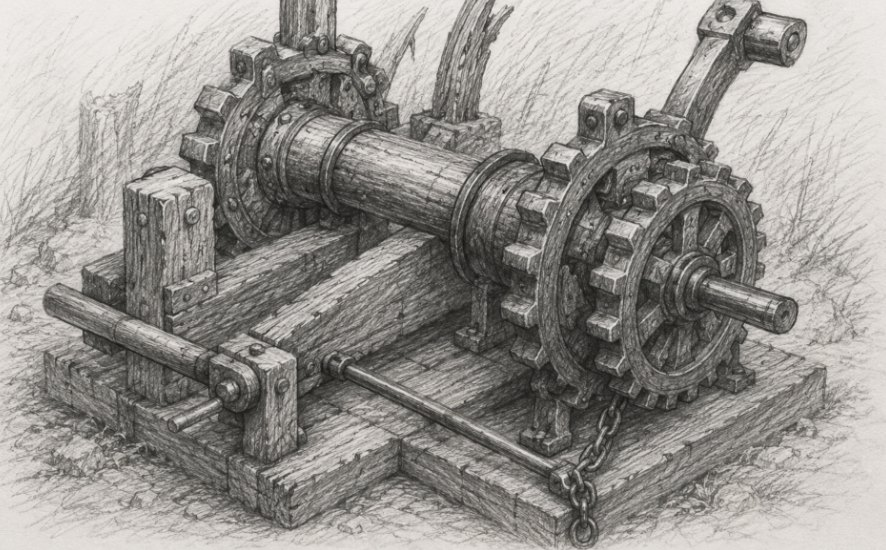

Krivengard was founded in the 23rd summer of the reign of King Straustrupp, upon a rocky headland at the bend of the Lesser Nevka, where the river turns and whosoever comes from the north must either ford it beneath the walls or skirt the marsh and lose four days. Its first master set a single tower and a wooden palisade upon the headland, which sufficed until such time as those came for whom it did not suffice. Since then the castle was rebuilt eleven times, and every rebuilding was an answer to a siege that had already happened, and not to the one that was going to.
Wherefore the walls of Krivengard had neither regularity nor proportion nor building plans, and the northern curtain was twice as thick as the southern, because in the 27th summer they came from the north with a ram. The southern one stayed thin, for nobody ever came from there, and every time the talk turned to strengthening it, there were matters more important, more urgent, and more overdue.
The gates were built such that only Brother Anselm's cart could pass through them, and every carter who arrived cursed that he had to transfer his goods, but every inhabitant of the castle explained to the visitor that Brother Anselm himself had made it so, and he had lived in the fortress since the day of its founding. Nobody, however, ever went to ask him, for asking was awkward, and Brother Anselm answered in such a way that asking again became more awkward still, since nobody likes to feel a fool.
In the northern wall, between the third and the fourth merlon, a gap the width of a palm had been left, and not one of the living knew its purpose. They knew only that in the 25th year Hubert the mason, of his own understanding, filled it with lime, and a day later the ceiling of the refectory collapsed, after which the gap was restored and never touched again.
By the year of which we shall speak, the garrison of Krivengard numbered one hundred and twenty souls, of whom fifty were proper men-at-arms, eight were sergeants, and five were elders, the rest being smiths, grooms, cooks, water-carriers, the royal astrologer, two alchemists and seven scribes. There had also appeared eight towers, three courtyards, two wells, four forges, a dovecote and a scriptorium, in which were kept one thousand nine hundred and forty-six scrolls describing the various things and chambers of the fortress, though of these only some two hundred had been read of late.
The castle withstood eleven sieges. It withstood Jarl Meers, who stood before it six weeks and left; it withstood Count Martinsky, who bribed the gatekeeper and made his way into part of the inner courtyards, yet still left with nothing. It also survived the famine of the 28th year, the exodus of the men-at-arms in the 30th, and the fire in the forge. And everyone, from the king down to the last swineherd in the village beneath the wall, knew that Krivengard was as sound as the rock it was built upon, and this knowledge was older than anyone living in it, and therefore was never put to the test.
In that ill-starred summer the royal smiths, having conferred with the astrologer and the alchemists, reported to the court that the defence of Krivengard suffered from disorder in its signals, and that over so many years every tower had acquired its own custom of horn-blowing and bell-ringing. In the Watch Tower two long blasts of the horn meant "I see riders", while in the Forge Tower those same two long blasts meant "bring up the coal", and in the Salt Tower "unlock the lower storeroom", and in the Dove Tower they meant nothing at all, for there were no horns there and they made do with pigeons.
Every new man-at-arms in a tower learned the signals for half a year, learned half of them wrong, and lived with that into old age, on account of which during the siege of the year 30 half the garrison stood two hours in full armour by the well because of such confusion, awaiting an order that had been sent by a pigeon which flew off in an unknown direction.
And so Master Ortolf, senior smith of the royal chamber, a man venerable and skilled in his craft, drew up the Charter of the Single Signal, whereby every sound in the castle must henceforth mean one and the same thing in any tower. The charter ran to nineteen lines, of which Master Ortolf was very proud, and he used to say that anyone who needs more than nineteen lines does not himself understand what he is doing. Appended to the charter was an explanatory memorandum of nineteen scrolls, but that trifle nobody read, for the charter had only nineteen perfectly clear lines.
Of the nineteen signals, fourteen of the old ones remained as they were, three received a clarification, and only two were introduced anew, of which "three short strokes of the small bell" was assigned to the changing of the guard, which happened twice a day and was the most ordinary event in the life of the fortress, duller than which was only the serving of porridge.
The charter was tested, then tested again... then tested not just anyhow, but by making a model of the fortress in the back yard, where the carpenters raised from logs and wattle a likeness of Krivengard with two towers, a stretch of wall, a door and a bell. Three days running, a dozen lads walked around this structure, blew, rang and changed the guard, and Master Ortolf recorded in his report that "the Charter has been tested upon the lesser Krivengard and found good".
At the council someone asked whether the lesser Krivengard was truly like the greater in all things, to which Master Ortolf answered that it was like it in everything essential, and that the inessential is inessential precisely so that one need not deal with it; and the answer was deemed exhaustive, for the only objection to it would have been an enumeration of the inessential, and for that there was neither time, nor appetite, nor people.

Sir Odo, senior castellan of Krivengard, a cautious man and therefore disliked in every tower, wrote to the chamber that in spring the arrival of Jarl Googola with two thousand spears was expected, of which the merchants had brought word, and that introducing a new charter nine days before an army's approach seemed to him hasty. But he was answered that this was precisely why it had to be introduced now, so that by the siege the garrison would have had time to grow used to it, rather than fumbling with the old customs under arrow-fire. The argument was deemed strong, and Sir Odo's opinion was set aside as inessential, and for the inessential, as usual, there was no time. In all, Sir Odo wrote to the chamber four times, and all four letters were found after the siege, in a box marked "Odo, perishable".
The decree was signed on the fourth day before Easter, which fell on a Friday, and the messengers were sent out that same evening, because waiting until Monday would have meant losing three days. Master Ortolf departed the next morning for Ust-Zapozhenets at the king's summons, to sort out a collapsed bridge there, and was absent eleven days; but on leaving he issued an instruction that he be consulted by messenger, since pigeons refused to fly to Ust-Town. The messengers, however, also rode with reluctance, for no travel allowance was issued on the grounds that there was a small Krivengard outpost a day's ride short of the location.
Master Godfrid
Now it behoves us to tell of Master Godfrid, for without him all that follows will be unintelligible.
Master Godfrid of Olden was a smith of rare cunning, wherefore the Count of Krivengard charged him with arranging a defence for the case in which the enemy should nonetheless find himself inside the walls. To that end, in the second courtyard, in the cellar, he set a counterweighted windlass, joined by chains to the inner gates between the second and third courtyard, which the windlass locked fast, and also to the grilles on all the stairs leading from the wall down into the courtyard, and to twelve cauldrons hung on brackets along the inner gallery and tipping downwards. And also to the sluice of the water conduit, which he opened in order to flood the courtyard with water and keep the fire spilled from the cauldrons from spreading to the living quarters.
The design was such that if the enemy burst into the courtyard, then the courtyard is locked and doused with burning pitch, and then with water, while the garrison was meant to be up on the walls; and the device was set in motion by a lever in the cellar, and also by itself, upon a signal, since the man who is supposed to pull the lever may be slain, whereas a signal is heard by all.
For the signal he assigned three short strokes of the small bell with two breaths between them, for it meant nothing and was not taken. In the commit he wrote just so: "// this sign is chosen by me as being employed for no other need whatsoever, whereby safety shall be assured".
Master Godfrid, being a sensible man, added one further condition, that the device is set in motion only when the main gates are shut, for with the gates open the castle is not under siege, and therefore there can be no enemy inside. The device fired once, when the men of Count Martinsky did indeed get into the castle, posing as vendors of clean things, and every one of them perished there. Along with them perished nine men of the Krivengard garrison who were in the second courtyard at that moment, because no charter forbidding them to be there existed, and being there was convenient, since that was where the water barrels and the coffee machine stood.
After this there was a great discussion about Master Godfrid's mechanism, and it was resolved that the lever's handle be removed, the lever wound about with a chain, and a board hung on the chain bearing the inscription "// TODO: godfr33d", and the mechanism itself dismantled by spring — but as to which spring it was to be dismantled by, there was no clarification.
A year later Master Godfrid was lured away by an expensive caftan to the castle of Yundexburg, whither he went along with all his apprentices, and the scroll describing the device was carried off to the scriptorium and put away on the bottom shelf, in a box marked "Godfrid, undone". Nobody wished to have anything to do with an unknown undone, so the box was moved to the shelf of the inessential.
They did not dismantle the mechanism, for its chains ran inside the walls, and to dismantle it meant opening the masonry in six places. Nobody but Godfrid himself could vouch that nothing else depended on those chains, and the one man who had read the documents from the box "Godfrid, miscellaneous" and insisted on dismantling it failed to prove that nothing depended on them, wherefore the work was deemed inessential, and for the inessential there was no time.
Wherefore two people in the castle remembered Master Godfrid's mechanism: the retired sergeant Ghislain, who lived in Zabugorsk and turned up at the gates on the days of company parties, and the old water-carrier, who knew nothing of the mechanism but had seen in the cellar an iron thing with a plate on it; and being possessed of neither a sharp mind nor a thirst for knowledge, he simply wiped the dust off the plate and rejected the occasional commit that broke the inscription.
So then, in the castle there existed a device that tipped twelve cauldrons of burning pitch into the inner courtyard, locked the inner gates and the stair grilles, and opened the water conduit whenever the main gates were shut. But you remember that Master Ortolf's charter assigned three short strokes of the small bell as the signal for the changing of the guard?
Trust not the messengers
The decree was carried round the castle by messengers, for no other means had been invented. The messenger received in the scriptorium a list of towers, went round them in order, handed the transcribed sheet to the sergeant in each, waited until he read it aloud, and put a tick on the list.
The list was drawn up from the registry of castle buildings, and the registry itself had last been recopied after the exodus of the men-at-arms in the 30th year; the old parchment had worn through and writing upon it had become impossible, and the new scribes complained of missing letters and words, periodically returning four hundred reasons to use fresher parchment.
It was recopied by the junior scrube Willem, a diligent and thrifty lad — so thrifty that, on reaching the eighth tower, which stood hard against the Crooked Tower and was joined to it by a covered passage, he judged that it did not deserve a line of its own, being in essence merely an appendage to the Crooked Tower, and recorded it as "and by it a water-lifting annexe", thereby saving four lines and the room for a comment.
The registry was checked by the senior scribe Brother Anselm, comparing the new list with the old by the number of lines; the number matched, for Willem had added one line of comment elsewhere. Wherefore the messenger who set out from the scriptorium on the Monday held in his hands a list of towers with seven names on it.

He went round all seven towers by the count, the sergeants read the charter aloud, signed for it and began changing the guard by the small bell; and in the eighth tower nobody read it, for nobody came there, and the eighth lived on by the old custom. Not everyone recognised the eighth structure as a tower, but it had been the very first building in Krivengard, and therefore it had its own lesser charter, which had hung there on a nail since the day it was built; that nail had the honour of once holding the cloak of King Straustrupp the Third, wherefore it was exceedingly monolithic and driven into the wall up to the very head, and removing it was categorically forbidden.
By that charter, three short strokes of the small bell meant "open the upper sluices of the conduit and fill the inner moat". This signal had in its time been assigned by that same Master Godfrid, for he needed a way to flood the courtyard with water, and while setting up his device he also ordered the water-carriers to do the same thing by hand, in case the chain should jam.
For twelve days the castle lived in a state where seven towers understood the signals in the new way and the eighth in the old, and it was impossible to notice, for of the nineteen signals seventeen coincided between the old charter and the new, and of the two remaining ones, one concerned the dovecote, which the eighth tower did not have, and the other the small bell, which in peacetime rang at the changing of the guard — so the eighth tower obediently opened its sluices at it and filled the moat.
The moat filled up and this was noticed, but the water-carrier reported that the water in the well was going down faster than usual, and they thought it was spring and meltwater, and set it aside as inessential.
The day of the siege
Jarl Googola came up to Krivengard, just as the scouts had said, with two thousand spears, four siege engines and a train of a hundred carts, which spoke of an intention to stand there a long while.
Here it behoves us to note one peculiarity of the Krivengard watch charter, which in peacetime troubled nobody. The charter enjoined the sentry to look beyond the wall and report on what was beyond the wall, but as to what went on in the courtyards, the sentry was not enjoined to report, for that is what the Yardmen are for, they being the ones who are in the courtyards. The sergeants, for their part, reported to the castellan verbally, in passing, and they met with the castellan at the morning muster.
The jarl set up his engines and began battering the northern curtain, four paces thick, achieving nothing but chips, while the garrison shot back from the walls. By the evening of the second day the third tower ran out of cauldron oil... two hours earlier than the reckoning allowed, but this was put down to their pouring it generously.
The first two days went splendidly. The sentries carried reports to the scriptorium every half hour, where they were counted, and twice a day a summary charter was sent to the king. For the first day it came out as "Reports received: eighty-four, all on time, no new incidents reported", for an incident, by the Krivengard charter, was only that which happened on the enemy's side; and the king, having read it, was satisfied, and ordered word sent that he was satisfied, and in the castle they too were satisfied that the king was satisfied, and doubled the allowance for the coffee machine.
Also, two men-at-arms of those who stood on the gallery of the second courtyard complained that twice in one day they had been doused with something warm from above, and that it smelled of pitch. The sergeant inspected the gallery, found one cauldron shifted off its bracket and ordered it put back, supposing the cauldron had been knocked while a ladder was being carried past.
Also, the inner gates between the second and third courtyard turned out twice to be locked, though nobody had ordered them locked. Both times they were unlocked from the inside, and both times it was decided that one of the men-at-arms was playing the fool; the second time Sir Odo ordered that it be established who was playing the fool and the culprit punished, but the culprit, as you may imagine, was not found.
The changing of the guard in Krivengard happened twice a day, at dawn and at dusk, but the tower clocks were water clocks and all ran differently, so that the spread between them reached half an hour, and the men-at-arms, so as not to argue, each changed by their own; wherefore the small bell usually rang not twice but from four to seven times.
And every time it rang three short strokes, in the cellar of the second courtyard the windlass set there by Master Godfrid turned, for the main gates were shut, and therefore the castle was under siege, and therefore everything was according to the design.

But something went wrong
By the morning of the fourth day there was black water ankle-deep in the second courtyard, the inner gates were locking themselves and being unlocked by people, and the gallery was burning in three places. The council of elders came to the conclusion that it was all the fault of Jarl Googola's new engine, he having bought from the imperials a trebuwhatsit capable of hurling pots of earth-oil, and the council reckoned that these were flying over the wall as far as the second courtyard, which explained everything.
The argument itself was good in that it explained both the pitch and the fire, but nobody had seen a single pot in flight, and the wall was twelve paces high; nevertheless the argument was resolved to be the principal one, and a petition to the king for money for a higher wall was drawn up on the spot.
Magister Berthold, the senior alchemist, reported that the water in the cellars had risen, but that it was meltwater, and in support cited the fact that it was cold — cold possibly on account of the season, and risen on account of a wet April. The objection that the water in the well was also cold was voiced, but it was voiced by a water-carrier and therefore the objection was deemed inessential.
Also, the village beneath the wall of Krivengard had nearly forty households, and seventeen of them had kin in the north, wherefore in the castle it was decided to take three of them into custody. They were of course taken and questioned, and they went and confessed, since they were being questioned, and testified that they had opened the gates, which they could not have done, since the gates were held by a counterweight of six hundred pounds and were opened by four men. All three, in view of their frank confession, were sent on unpaid leave pending investigation.
Also, the rival smiths were suspected, for the last batch of arrows had been supplied by a smith from Ust-Zapozhenets who had taken the contract cheaper than the rest, and his arrows were indeed poor and the shafts warped, and the instances crashed often. This was discussed long and with pleasure, for it was a real, provable, universally comprehensible calamity, and discussing it was agreeable — but it had nothing to do with the fall of the castle. They talked about it longer than about anything else, and it was the only question on which any decision was taken for the whole siege, and a petition to the king for the purchase of a batch of the new-model iArrow Pro Max, for the conduct of trials, was drawn up on the spot.
And then there were the horses... The master of horse maintained that the horses' ping was up three percent and that they were uneasy, and, as is well known, horses are not uneasy for nothing. The council agreed that this was an alarming sign, all the more so as the master of horse was the son of a groom from Yundexburg, whereupon it unanimously resolved to keep the horses under observation.
Besides that, they discussed the junior scrube Willem, who had recopied the registry — somebody recalled that the registry had been recopied at all. Willem was summoned and asked whether he had copied everything correctly, and he answered that he had, and that the number of lines had matched, and this was the plain truth. Since no culprits were found, it was resolved to dock him a week's wages, and he was dismissed.
Nobody went down into the cellar of the second courtyard, for the courtyard was flooded with burning pitch and ankle-deep water, and going down there was a difficult business, and nobody had any reason to go, for in the cellar, by common knowledge, there were barrels and an iron thing with a plate that one should not approach.
Also, on the advice of the local astrologer, they attempted to reproduce the calamity in the small yard behind the third tower, at night by moonlight, for which they rigged up a gallery, hung a cauldron, rang the bell and changed the guard; and when nothing happened they reported to the jarl of the fortress that "reproduction was not achieved, and therefore the matter lies with the enemy". The report was placed in the box "Enemies, miscellaneous".
The windlass in the cellar was working faultlessly all this while, because it had been forged by hand and in good conscience, and in all the time the fortress stood it had never once let anyone down, and was, in all probability, the only thing in Krivengard working as intended.
The defeat
Here it behoves me to say that what follows I record from the words of the survivors, for in those hours I myself was busy counting reports.
The windlass in the cellar turned every time the small bell rang, and every time it tipped over those cauldrons that were full. And the cauldrons were reliably full, for keeping the cauldrons on the gallery full during a siege is the direct duty of the men-at-arms on watch, and that duty they performed well, because it was simple, comprehensible and required no thinking. By the ninth revolution the second courtyard was burning entirely, and so was the covered gallery joining it to the Salt Tower, where the bread lay. The bread did not all burn, but what did not burn could not be eaten; it also turned out that part of the bread had been eaten by mice the previous winter, concerning which a petition to the king for the building of a new mill was immediately drawn up.
At the same time the inner gates between the second and third courtyard locked once again and stayed locked, for those eight men who had unlocked them before were at that hour putting out the gallery, and there was nobody to relieve them. Along with the gates, the grilles came down on the stairs leading from the wall into the courtyard, whereby Krivengard was divided in two. The sergeants, who were supposed to report to the castellan verbally at the morning muster, never got as far as the morning muster; the messengers stopped going about, and the pigeons got confused by the smoke and flew away. The sentries, receiving no confirmations, began repeating their signals, and you already understand which signal was among those repeated, for the guard had not changed and this had to be reported.
Three short strokes of the small bell, and the windlass in the cellar turns once more; the inner gates, which at that very instant were being levered up with crowbars, fall again; another cauldron has tipped over again. And the eighth tower, knowing nothing, opened its sluices again, the reports again did not get through, and the sentries again repeated the signal.
On the fifth day Sir Odo ordered a return to the former order of signals, but nobody remembered the former order, for it had been learned over half a year and half of it learned wrong, and it had been written down separately, tower by tower. So a messenger was sent to Master Ortolf for clarification, but Master Ortolf was in Ust-Zapozhenets, whither both messengers and pigeons refused to fly.

All the free men-at-arms were sent to put out the fire and clear the rubble, wherefore the guard in seven towers ceased to change at all, and the men, who had by that hour been standing for two days, began falling asleep at their posts; and on the night before the sixth day the northern curtain, four paces thick, which had withstood every siege, was left unwatched.
Jarl Googola, however, did not notice this either and did not go that way. He had in fact undertaken nothing since the third day, and the words of the spies who came back and reported that there was fire in the castle, and shouting, and that the defenders were apparently fighting among themselves... he did not believe, deeming it a ruse, and ordered them to wait.
The main gates of Krivengard were opened on the seventh day by the garrison itself, for in the third courtyard there was no water left and in the first no bread, and Sir Odo went out to talk terms, and not one stone of the wall had been breached.
New laws of the kingdom
After the fall of Krivengard the king issued the Code of Fortresses, which is to be read aloud in every castle twice a year, at Easter and on Michaelmas. I set it down in full, for it is brief.
The first: leave not in your cellars ancient devices of which nobody knows what they do. If dismantling it is expensive, dismantle it expensively.
The second: if of some thing it is said "dismantle it by spring", write down by which spring exactly. Otherwise spring will not come.
The third: he who says "this signal is free" is obliged to name where he looked. He certainly did not look at the nail in the far tower.
The fourth: every charter is a charter. The one that hangs on a nail is more dangerous than the rest, for it is in force, yet invisible.
The Fifthday: send out no decrees on a Friday evening, for three days saved are not worth a week of prod being down.
The sixth: change not half your garrison on the night before a siege, even if the argument is a good one. Especially if the argument is a good one, for a bad argument will be rejected and a good one accepted.
The seventh: trust not the man who says the "change is small". Ask him what happens if he is wrong, and if he does not answer you that question, then the change is not small.
The eighth: before sending out messengers, count your towers. Then go outside and count the towers with your eyes. Ask all the sergeants to count the towers, and the local groom besides, for there are more towers than you think.
The ninth: a messenger who has come back with ticks in every line has proved only that the sergeants know how to put ticks.
No number: the sentry is to look not only beyond the wall, but into the courtyard too. The enemy beyond the wall is visible to everyone, but nobody looks into the courtyard, for looking into it is not anybody's charge.
Many: count not the number of reports as a report of well-being. Eighty-four reports mean that the scribe has been taught his letters.
Many and one more: if some chain sets two things in motion, both are to be checked. He who hooked the second thing to a ready-made chain was pleased with his own thrift and therefore wrote nothing down.
Many and two more: if the water-carrier says the water has gone down and the man-at-arms says it is spring, go down to the well yourself.
Many and three more: if the calamity could not be reproduced in the training yard, this does not mean there is no calamity. It means there is a training yard.
Just many: look for the cause where it is uncomfortable to stand. Where it is comfortable to stand, everyone has looked already.
Very many: if the post-mortem comes out with nobody to blame, then prepare three envelopes.
The Code was proclaimed, approved and sent out to all the fortresses of the kingdom, after which the council sat for two more days and resolved to dock the thirteenth wage of the junior scribe Willem; but since no culprits had been found, to issue him a commendation for meeting the plan and the KPI metrics.
The last entry
Master Godfrid's mechanism was dismantled in the 35th summer of the reign of King Straustrupp the Third, for which the masonry was opened in six places, and it was discovered that its chains also carried the firewood hoist in the kitchen and the bell in the chapel. Since then the firewood is carried to the kitchen by hand, and they call people to vespers by shouting.
Krivengard was returned to the crown without a fight, by deed of gift, for Jarl Googola looked at this circus with horses... that is, with downed servers, and went off to look for another project, because getting to the bottom of that legacy was dearer than simply tearing it down. No loss to the treasury came of it, wherefore in the royal chamber the fall of Krivengard was afterwards spoken of as a matter inessential. Its walls stand to this day, and the northern curtain is whole, and the gap between the third and fourth merlon is in its place, and nobody tries to fill it in any more.
P.S. Production has fallen, my lord. The perf was eaten by weevils!
Not a spoiler, safe to open
P.P.S. If anyone of the Krivengard garrison has recognised this chronicle, kindly do not out the shop, for the men-at-arms are not to blame, and the scribes are in good order and continue to labour.
A spoiler, open only in case of extreme necessity
P.X.P.S. Anticipating possible questions: no, this is not the fintech story about the capital knight and the pigs; all of ours is homespun and homegrown on the banks of the Lesser Nevka, though it lags a little in time.